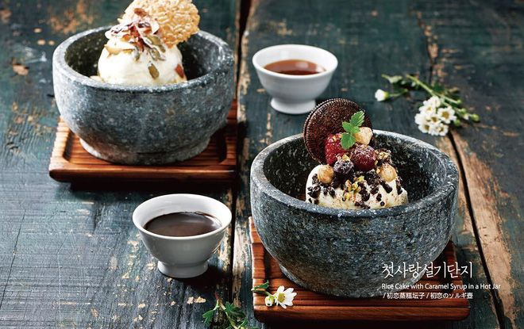

Bingsu Recipe

Ingredients:
- 2 cups shaved ice
- 1/4 cup condensed milk
- 1/2 cup sweet red beans
- 1/2 cup fresh fruits (e.g., strawberries, mangoes)
- 1/4 cup mochi pieces
- 1 scoop of vanilla ice cream (optional)
Instructions:
- Prepare the shaved ice using a blender or ice shaver and place it in a serving bowl.
- Drizzle condensed milk evenly over the shaved ice.
- Top the ice with sweet red beans, fresh fruits, and mochi pieces.
- Optionally, add a scoop of vanilla ice cream on top for extra creaminess.
- Serve immediately and enjoy your refreshing bingsu!